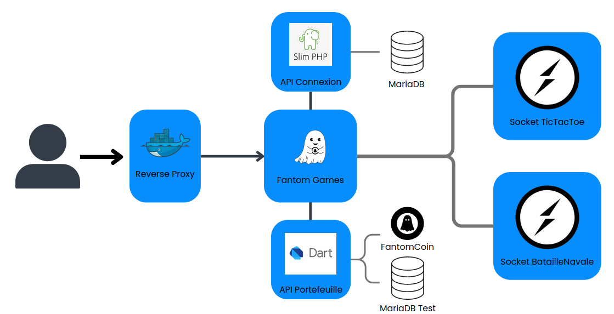

Technologies utilisées: Flutter, Dart, Socket IO (Javascript), PHP Slim, Docker, Reverse Proxy, Cryptomonnaie
Année de réalisation: 2023-2024
Note finale:à venir
Fantom Games a été réalisé dans le cadre de ma troisième année de BUT Informatique. Nous avons réalisé en équipe de 4 un site web avec des mini-jeux permettant de gagner des crypto-actifs tout en s'amusant.
Vous souhaitez faire des petits mini-jeux avec vos amis et gagner de l'argent en même temps? Fantom Games est le site qu'il vous faut!
Le contexte de ce projet était de faire un site web assez simple, avec des mini-jeux et chaque victoire à un mini-jeu permettait de gagner des Fantom Coin, un crypto-actif développé spécialement pour le projet.
Le site propose un morpion et une bataille navale fonctionnelle. Voici le lien du serveur (encore en développement, des bugs peuvent arriver) : https://www.fantomgames.eu
Ce projet a été très compliqué, de par son aspect technique car réalisé un crypto-actif était très complexe.
Nous avons quand même bien réussi ces différentes tâches, mais déployer un crypto-actif revenait à trop cher, nous n'avons donc pas d'argent derrière le site mais il marche tout de même.
Voici ci-dessous quelques images de notre projet, ainsi que le lien du répo :
Fantom Games
Architecture globale :

MLD de notre application :